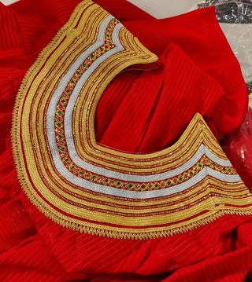
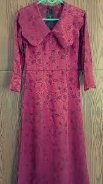
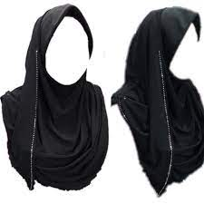
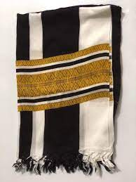

|  |
The dhivehi libaas is a traditional Maldivian dress for women. The neckline is adorned with what is called kasabu viyun, a collar hand stitched with silver and gold laces.The image of traditional Maldivian women’s dress is carried in the heart of every islander, and normally in their pockets. The libaas lady in red, yellow, and black - cool, comfortable and confident. While libaas simply translates as ‘dress’, boavalhu libaas specifically describes a long-sleeved shirt with the wide neck, which is then often trimmed with the white and gold kasabu. The finished product is referred to as karufehi libaas, and is worn with an underskirt - feyli - often patterned in black and white. |
|  |
Also treated as the national dress of Maldives, it serves an essential purpose in representing the island's identity. This apparel is gown made with lace. It is elegant, made to fit the body contours well. The charm of the outfit lies in the elegance it reflects when it is worn. It is a lace creation, but with evolution, other textiles are also used. They are worn at important occasions such as formal and national functions. However, simpler versions of it are worn regularly by traditional ladies of the island. They are not as elaborate as the party Dhigu Hedhun outfits. They are worn along with minimal ornaments. |
|  |
Islam is prevalent throughout the Maldives, and its influences can be seen in the local attire as well. As such, it's not uncommon to see women wearing black robes and headscarves on the islands. That being said, burqas aren't just worn alongside traditional attire, you'll find plenty of women who pear it up with fashionable dresses. |
|  |
Men’s traditional dress of Maldives are simpler. They form the very beginning sported Sarungan which are long clothing wrapped around their waist. They are usually black with white stripes. They are very similar to Feyli- that which is worn under Dhivehi Libaas. It is matched with either a white long or short-sleeved shirt. The men usually wore this simple attire, mostly weaved in cotton fabrics. The Sarungans are smart, and light wears clothing piece. |